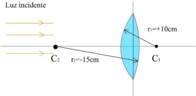
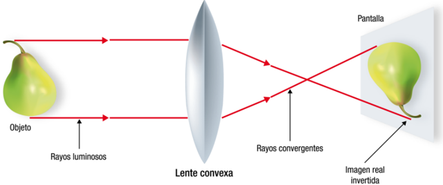
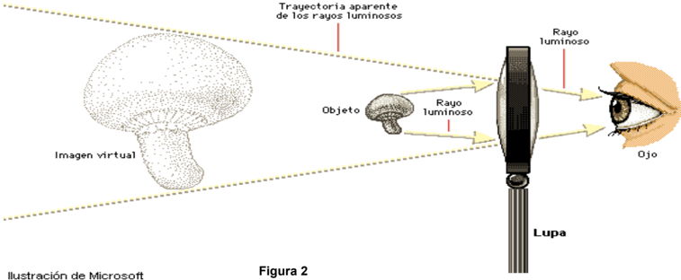
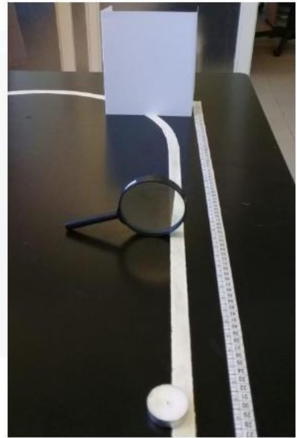

Como funciona una lupa
PE27. UEGP Nº 109 Colegio Integral Dr. Carlos Primo López Piacentini Resistencia, Chaco.
¿Cómo funciona una lupa? En la experiencia anterior usaste una lupa, pero, ¿qué es una lupa? Una lupa es un instrumento óptico cuya parte principal es una lente convergente o convexa. Una lente es un dispositivo óptico con dos superficies refractivas. Así, una lente convexa es una lente que es más gruesa en el centro que en los extremos. La luz al atravesarla converge. Esto hace que se forme una imagen del objeto en una pantalla situada al otro lado de la lente. La imagen está enfocada si la pantalla se coloca a una distancia determinada, que depende de la distancia del objeto a la lente y del foco de la lente. El foco de una lente es el punto en el que convergen los rayos de luz provenientes de un objeto. Este se encuentra en el punto medio entre el centro de curvatura y el centro óptico de la lente. Llamamos distancia focal a la distancia f entre el centro de la lente y el foco. Las lentes con superficies de radios de curvatura pequeños tienen distancias focales cortas.
Figura 1. Lente convergente.
150 - OAF 2020 Si la distancia del objeto al centro de la lente es mayor que la distancia focal, una lente convergente forma una imagen real e invertida. Si la distancia del objeto al centro de la lente es menor que la distancia focal, la imagen será virtual, mayor que el objeto y no invertida. En ese caso, el observador estará utilizando la lente como una lupa o microscopio simple (Figura 2).
Objetivos
- Comprender el funcionamiento de una lupa como sistema óptico.
- Corroborar las características de las imágenes producidas por una lente convergente.
- Calcular la distancia focal de una lupa.
Materiales
- Lupa, 1.
- Vela, 1.
- Pantalla blanca (cartulina blanca doblada), 1.
- Cinta métrica, 1.
- Maíz (sin germinar), 1.
Parte A: características de la imagen obtenida mediante la lupa
Procedimiento Tomen el maíz y obsérvenlo con la lupa.
Resuelvan la actividad 1
- Tachen la palabra en negrita que corresponda para que las siguientes oraciones sean correctas.
- La imagen obtenida es virtual / real ya que los rayos salientes del objeto pasan / no pasan por el punto de imagen.
- La imagen obtenida es invertida / derecha.
- El tamaño de la imagen es menor / mayor que el tamaño del objeto ya que este último se encuentra a una distancia mayor / menor que la distancia focal.
Parte B: obtención de dos imágenes diferentes
Procedimiento
- Extiendan sobre la mesa la cinta métrica.
- Soliciten al tutor que encienda la vela.
- Coloquen en un extremo la vela encendida y a 100 cm de la misma la pantalla blanca. Estos dos objetos quedarán fijos en toda la experiencia. Figura 2
OAF 2020- 151
Figura 3. Pantalla + lupa + vela
- Tomen y muevan hacia la pantalla, a partir de los 10 cm de la cinta métrica, la lupa, hasta formar sobre la pantalla una primera imagen de la vela lo más nítida posible. Dejen fija la lupa a esta distancia.
-Resuelvan las actividades 5 y 6. 5.a) Midan sobre la cinta, en cm, la distancia de la vela a la lupa, a esta distancia la llamarán S (Distancia objeto-lupa) para la 1ra lectura. Completen la tabla 1.
1ra lectura (cm) 2da lectura (cm) S S’ Tabla 1
5.b) Midan sobre la cinta, en cm, la distancia de la lupa a la pantalla (con la imagen de la vela nítida), a esta distancia la llamarán S’ (distancia imagen-lupa) para la 1ra lectura. Completen la tabla 1.
- Completen el siguiente párrafo utilizando las palabras del catálogo. Tengan en cuenta que hay más palabras que espacios para completar.
Catálogo invertida – derecha – real – virtual – menor – mayor– igual
La distancia del objeto a la lente es
que la distancia de la imagen a la lente. En este caso, la imagen obtenida es
y
. El tamaño de la imagen es
que el tamaño del objeto.
- Tomen y muevan nuevamente la lupa (en el sentido creciente de la escala de la cinta métrica) hasta formar sobre la pantalla una segunda imagen de la vela lo más nítida posible. Dejen fija la lupa.
152 - OAF 2020 Resuelvan las actividades 8, 9, 10 y 11 8.a) Midan sobre la cinta, en cm, la distancia de la vela a la lupa, a esta distancia la llamarán S (distancia objeto-lupa) para la 2da lectura. Completen la tabla 1. 8.b) Midan sobre la cinta, en cm, la distancia de la lupa a la pantalla (con la imagen de la vela nítida), a esta distancia la llamarán S’ para la 2da lectura (distancia imagen- lupa). Completen la tabla 1.
- Completen el siguiente párrafo utilizando las palabras del catálogo. Tengan en cuenta que hay más palabras que espacios para completar.
Catálogo invertida – derecha – real – virtual – menor – mayor – igual
La distancia del objeto a la lente es
que la distancia de la imagen a la lente. En este caso, la imagen obtenida es
y
. El tamaño de la imagen es
que el tamaño del objeto.
- Utilizando los datos de la tabla 1, completen la tabla 2 realizando los cálculos indicados para obtener un valor aproximado del foco de la lupa.
Foco 1ra lectura 2 da lectura fpromedio fp f= S.S’/(S+S’) f1= f2= (f1+f2)/2 fp = Tabla 2
- Encierren con un círculo la respuesta correcta. a) De acuerdo al valor obtenido del foco promedio, las distancias S medidas para la vela en los dos casos anteriores eran:
A mayor que la distancia focal B Menor que la distancia focal. C Igual que la distancia focal.
b) De acuerdo a los experimentos anteriores si se quiere obtener una imagen virtual, mayor y derecha es necesario que la distancia objeto lupa sea:
A mayor que la distancia focal B Menor que la distancia focal. C Igual que la distancia focal.
- Coloquen ahora la lupa a una distancia que sea igual a la distancia focal promedio.
Resuelvan la actividad 13. 13. Tachen la palabra o grupo de palabras en negrita que corresponda para que el siguiente párrafo sea correcto.
OAF 2020- 153 Al encontrarse la vela en el foco de la lupa (es decir, distancia S igual a la distancia focal), los rayos que emergen del objeto son paralelos / perpendiculares entre sí, por lo que la distancia S’ se puede / no se puede medir, y por lo tanto no se forma / se forma una imagen.




Topic: Geometric Optics Metodi: Thin Lens & Mirror Equation, Experimental Data Analysis Competenze: Physical Reasoning, Experimental Data Analysis Objects: Lens, Screen Fonte: Testo (PDF) — p.7
Come funziona una luccia
PE27. UEGP No 109 Colegio Integral Dr. Carlos Primo López Piacentini Resistenza, Chaco.
Come funziona una lucetta? Nella precedente esperienza hai usato una lucetta, ma che cos’è una lucetta? Un lucido è un strumento ottico la cui parte principale è una lente convergente o convexa. Una lente è un dispositivo ottico con due superfici refrattive. Così, una lente. convexa è una lente che è più spessa al centro che nelle estremità. La luce al attraversando la terra converge. Questo fa sì che si formi un’immagine dell’oggetto su uno schermo. situato dall’altra parte del lente. L’immagine è focalizzata se lo schermo viene posizionato a una Distanza determinata, che dipende dalla distanza dell’oggetto dalla lente e dal foco della lenti L’obiettivo. Il foco di una lente è il punto in cui i raggi di luce provenienti da una oggetto. Si trova nel punto medio tra il centro di curvatura e il centro ottico. della lente. Chiamiamo distanza focale la distanza f tra il centro della lente e il foco. Le lenti con superfici di piccoli raggi di curvatura hanno distanze focali
- tagliati.
Figura 1. Lenti convergenti.
150 - OAF 2020 Se la distanza dell’oggetto dal centro della lente è superiore alla distanza focale, una lente convergente forma un’immagine reale e inversa. Se la distanza dell’oggetto dal centro della lente è inferiore alla distanza focale, l’immagine sarà virtuale, maggiore dell’oggetto e non inversa. In questo caso, l’osservatore sarà usando la lente come una lente o un semplice microscopio (Figura 2).
Obiettivi
- Comprendere il funzionamento di una lente come sistema ottico.
- Confirmare le caratteristiche delle immagini prodotte da un obiettivo convergente.
- Calcolare la distanza focale di un lucido.
Materiali
- Lupa, uno.
- Vela, uno.
- schermo bianco (cartolata bianca pieghevole), 1.
- Cintura metrica, 1.
- Maiale (non germogliato), 1.
Parte A: caratteristiche dell’immagine ottenuta con l’obiettivo
Procedura Prendete il mais e guardatelo con la luccia.
Risolvi l’attività 1
- Tachen la parola in grasso corrispondente per le seguenti frasi siano corrette.
- L’immagine ottenuta è virtuale / reale poiché i raggi esorgenti dall’oggetto passano / non passano attraverso il punto di immagine.
- L’immagine ottenuta è inversa/diritta.
- La dimensione dell’immagine è inferiore / maggiore della dimensione dell’oggetto in quanto tale L’ultimo è situato a una distanza maggiore/minore della distanza focale.
Parte B: ottenere due immagini diverse
Procedura
- Stendete la cinta su la tavola.
- Chiedete al tutor di accendere la candela.
- Mettiamo la candela accesa e lo schermo a 100 cm di distanza. bianco. Questi due oggetti resteranno fissi per tutta l’esperienza. Figura 2
OAF 2020- 151
Figura 3 Scattoli + lucchetta + vela
-
Prendete e spostate verso lo schermo, a partire da 10 cm della cinta metrica, la lucetta, fino a formare sullo schermo una prima immagine della candela il più nitida possibile. Lasciate fissare la lucetta a questa distanza.
-
Risolvi le attività 5 e 6.
- (a) Misura sulla cinta, in cm, la distanza dalla vela alla luccia, a questa distanza la Chiameranno S (Distanza oggetto-lupa) per la prima lettura. Completa la tabella 1.
1° lettura (cm) 2a lettura (cm) S S’ Tabella 1
5.b) Misura sulla cinta, in cm, la distanza da l’oltretta allo schermo (con l’immagine di la vela nitida), a questa distanza la chiameranno S (distanza immagine-lupa) per la 1a lettura. Completa la tabella 1.
- Completa il paragrafo seguente usando le parole del catalogo. Tenete presente che ci sono più parole che spazi da completare.
Catalogo inversa destra reale virtuale minore maggiore uguale
La distanza dell’oggetto dalla lente è
che la distanza tra l’immagine e il lente. En In questo caso, l’immagine ottenuta è
y
. Il taglio dell’immagine es
che la dimensione dell’oggetto.
- Prendete e spostate di nuovo la lente (nel senso crescente della scala della cinta Metrica) fino a formare sullo schermo una seconda immagine della vela più nitida
- Potrebbe essere. Lasciate fissare la luccia.
152 - OAF 2020 Risolvi le attività 8, 9, 10 e 11 8. (a) Misura sulla cinta, in cm, la distanza dalla vela alla luccia, a questa distanza la chiameranno S (distanza oggetto-lupa) per la seconda lettura. Completa la tabella 1. 8.b) Misura sulla cinta, in cm, la distanza da lupa allo schermo (con l’immagine di La vela è nettamente a questa distanza, la chiameranno S per la seconda lettura (distanza immagine-
- Il lucchetto. Completa la tabella 1.
- Completa il paragrafo seguente usando le parole del catalogo. Tenete presente che ci sono più parole che spazi da completare.
Catalogo inversa destra reale virtuale minore maggiore uguale
La distanza dell’oggetto dalla lente è
che la distanza tra l’immagine e il lente. En In questo caso, l’immagine ottenuta è
y
. Il taglio dell’immagine es
che la dimensione dell’oggetto.
- Usando i dati di tabella 1, completate la tabella 2 facendo i calcoli indicati per ottenere un valore approssimativo del foco del lucido.
Foco 1a lettura 2 dà lettura fmedia fp f= S.S’/(S+S’) f1= f2= (f1+f2)/2 fp = Tabella 2
- Chiudete in un cerchio la risposta giusta. a) Sulla base del valore ottenuto dal foco medio, le distanze S misurate per il La Commissione ha adottato una decisione che prevede che i due casi precedenti siano stati:
A più grande della distanza focale B
- Piu’ che la distanza focale. C Come la distanza focale.
b) Secondo gli esperimenti precedenti se si vuole ottenere un’immagine virtuale, maggiore e più destra è necessario che la distanza dell’oggetto lupa sia:
A più grande della distanza focale B
- Piu’ che la distanza focale. C Come la distanza focale.
- Ora, mettete la luccia ad una distanza che sia uguale alla distanza focale media.
Risolviamo l’attività 13. 13. Tachen la parola o gruppo di parole in carattere grasso corrispondente per il il paragrafo successivo è corretto.
OAF 2020- 153 Quando la candela si trova al foco della lente (cioè distanza S pari alla distanza focale), i raggi che emergono dall’oggetto sono paralleli / perpendicolari tra loro, quindi la Distanza S può / non può essere misurata, e quindi non si forma / si forma una immagine.
Topic: Geometric Optics Metodi: Thin Lens & Mirror Equation, Experimental Data Analysis Competenze: Physical Reasoning, Experimental Data Analysis Objects: Lens, Screen Fonte: Testo (PDF) — p.7
How does a magnifying glass work?
PE27. UEGP No 109 Integral College Dr. The Commission has also adopted a number of proposals for the implementation of the directive. Resistance, Chaco. What is it?
How does a magnifying glass work? In the previous experiment you used a magnifying glass, but what is a magnifying glass? A magnifying glass is an optical instrument whose main component is a convergent lens or lens. It’s convex. A lens is an optical device with two refractive surfaces. So, a lens. Convex is a lens that is thicker in the center than at the ends. The light at the It converges through it. This causes an image of the object to form on a screen. located on the other side of the lens. The image is focused if the screen is placed at a distance determined, which depends on the distance of the object to the lens and the focus of the lens. The lens. The focus of a lens is the point at which the light rays from a lens converge. object. This is the midpoint between the center of curvature and the optical center. from the lens. We call focal length the distance f between the center of the lens and the focus. Lenses with small radii of curvature have focal lengths
- Cutting it short.
Figure 1 is shown. Converging lens.
The Commission shall adopt delegated acts in accordance with Article 21 of this Regulation. If the distance of the object to the centre of the lens is greater than the focal length, a lens convergent forms a real and reversed image. If the distance of the object to the center of the lens is less than the focal length, the image It’s virtual, bigger than the object, and not reversed. In that case, the observer will be using the lens as a simple magnifying glass or microscope (Figure 2).
Objectives
- Understand how a magnifying glass works as an optical system.
- Confirm the characteristics of the images produced by a lens convergent.
- Calculate the focal length of a magnifying glass.
Materials
- Lupa, one.
- Sail, one.
- White screen (folded white cardboard), 1.
- Metric tape, one.
- Corn (not sprouting), 1.
Part A: Characteristics of the image obtained by the magnifying glass
The procedure Take the corn and observe it with the magnifying glass.
Resolve the activity 1
- Tachen the corresponding bold word for the following sentences be right.
- The image obtained is virtual / real as the outgoing rays of the object pass / not They’re passing through the image point.
- The image obtained is reversed/right.
- The size of the image is smaller / larger than the size of the object as this The latter is at a greater/shorter distance than the focal length.
Part B: Obtaining two different images
The procedure
- Spread the tape over the table.
- Ask the tutor to light the candle.
- Put the lighted candle on one end and the screen 100 cm away. white. These two objects will remain fixed throughout the experience. Figure 2
The following points shall be added:
Figure 3 is shown. Screen + magnifying glass + candle
-
Take and move to the screen, from the 10 cm of the tape, the magnifying glass, until you form a first image of the candle as sharp as possible. Keep the magnifying glass fixed at this distance.
-
Resolve activities 5 and 6.
- (a) Measure on the tape, in cm, the distance from the candle to the magnifying glass, at this distance the They ‘ll call you S . (Object-lamp distance) for the first reading. Complete the table 1.
1st reading (cm) 2nd reading (cm) S S’ Table 1
5.b) Measure on tape, in cm, the distance from the magnifier to the screen (with the image of the clear candle), this distance will be called S (image-lamp distance) for the 1st reading. Complete the table 1.
- Complete the following paragraph using the words in the catalogue. Please note There are more words than spaces to complete.
Catalogue Inverted right real virtual minor major equal
The distance from the object to the lens is
than the distance from the image to the lens. En In this case, the image obtained is
y
. The size of the image es
than the size of the object.
- Take and move the magnifying glass again (in the increasing sense of the scale of the tape) The second image of the candle is the most sharp. It’s possible. Keep the magnifying glass fixed.
The Commission shall adopt delegated acts in accordance with Article 21 of this Regulation. Resolve activities 8, 9, 10 and 11 8. (a) Measure on the tape, in cm, the distance from the candle to the magnifying glass, at this distance the They’ll call it S (object-lamp distance) for the second reading. Complete the table 1. 8.b) Measure on the tape, in cm, the distance from the magnifier to the screen (with the image of The clear candle, at this distance, will be called S for the second reading (image distance-
- I ‘m not . Complete the table 1.
- Complete the following paragraph using the words in the catalogue. Please note There are more words than spaces to complete.
Catalogue Inverted right real virtual minor major equal
The distance from the object to the lens is
than the distance from the image to the lens. En In this case, the image obtained is
y
. The size of the image es
than the size of the object.
- Using the data in Table 1, complete Table 2 by performing the calculations indicated for an approximate value of the focus of the magnifying glass.
Focus . First reading 2 is read faverage fp f= S.S’/(S+S’) f1= f2= (f1+f2)/2 fp = Table 2
- Circle the correct answer. (a) According to the value obtained from the average focus, the measured distances S for the The two previous cases were:
A greater than the focal length B Less than the focal length. C Just like the focal length.
(b) According to the previous experiments if you want to get a virtual image, greater and right is necessary for the distance of the object to be:
A greater than the focal length B Less than the focal length. C Just like the focal length.
- Now put the magnifier at a distance that’s equal to the average focal length.
Resolve activity 13. 13. Tachen the word or group of words in bold that corresponds to the The following paragraph is correct.
The Commission shall adopt implementing acts in accordance with Article 21 of this Regulation. When the candle is in the focus of the lens (i.e. distance S equal to the focal length), The rays emanating from the object are parallel/perpendicular to each other, so the distance S can/can’t be measured, and therefore doesn’t form/form a The image.
Topic: Geometric Optics Metodi: Thin Lens & Mirror Equation, Experimental Data Analysis Competenze: Physical Reasoning, Experimental Data Analysis Objects: Lens, Screen Fonte: Testo (PDF) — p.7